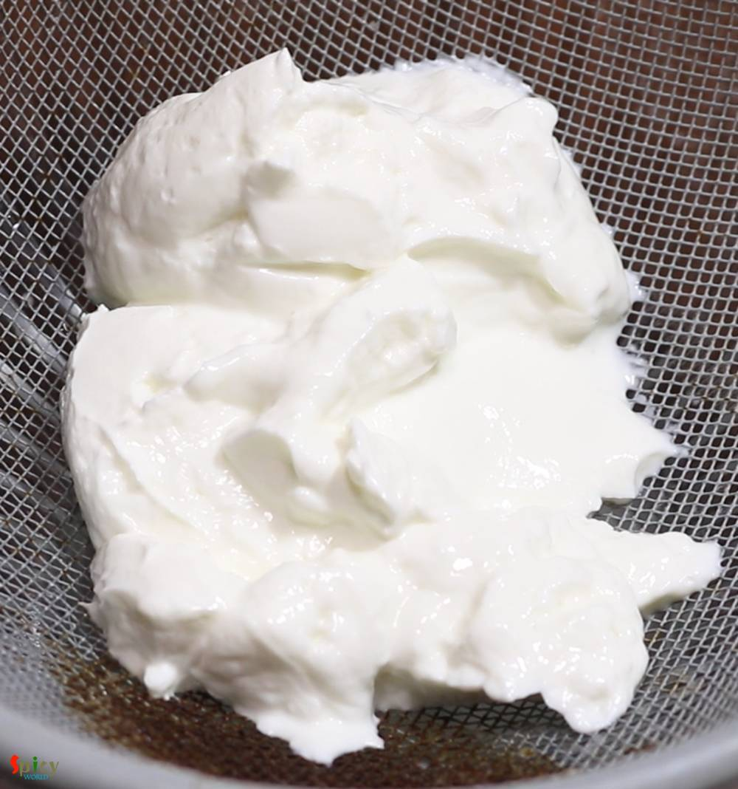
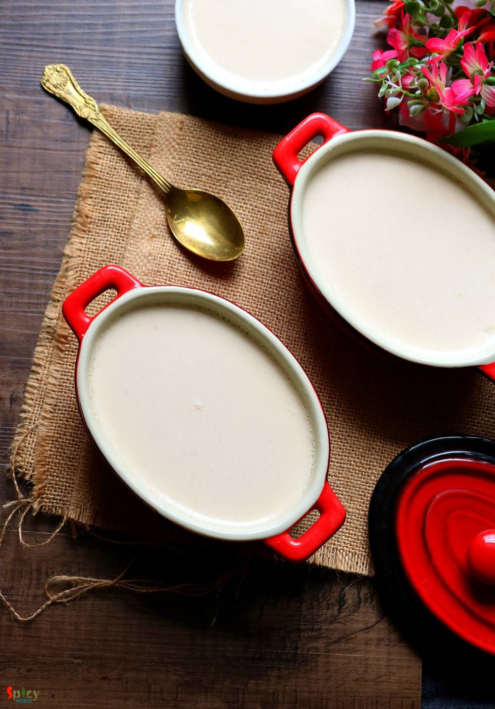
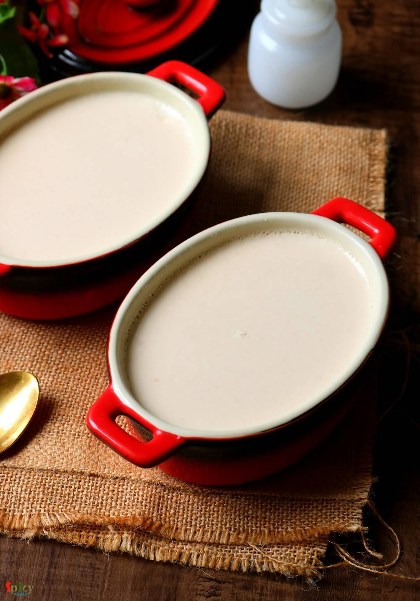
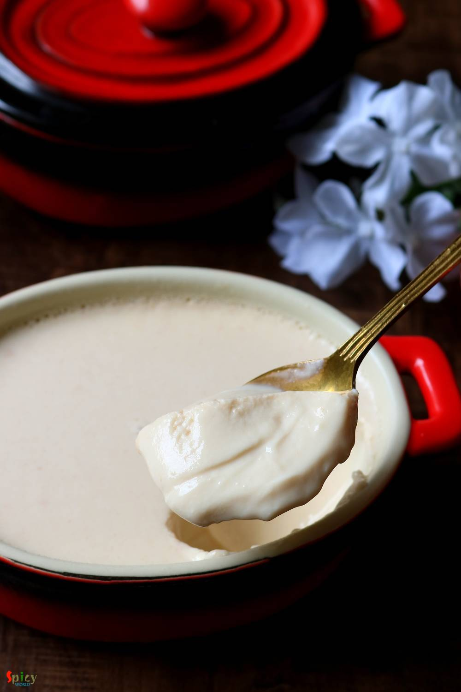

Simple and Easy Recipes
Mishti Doi / Caramel flavored Sweet Yogurt
© 2016 Spicy World, Published on: May 13, 2019
Mishti Doi means sweet yogurt in Bengali. Mishti Doi is a Bengali delicacy which you can eat in so many forms like dessert or as yogurt drink or with plain rice or with flattened rice. During summer this yogurt is very good for your stomach also. Making Mishti Doi is no rocket science, after going through this recipe with tips you can easily make creamy, thick caramel flavored sweet yogurt in your own kitchen.

Ingredients
- 1 liter full fat milk.
- 1/4th cup of full cream milk powder.
- 1 cup of sugar.
- 3-4 Tablespoons of curd or yogurt.


Steps
In a strainer add 3-4 Tablespoons of yogurt or curd. Place the strainer on top of a bowl. Keep it aside for 3-4 hours.
The bowl below will catch the extra water.
In a saucepan add full fat milk. Keep stirring until the milk starts boiling.

Add 1/4th cup of full cream milk powder, mix well and boil the milk for 10 minutes. Keep stirring in between.

In another pan, add 4-5 Tablespoons of sugar and 2-3 Tablespoons of water.

Mix well on medium high flame.
Keep stirring and after few minutes sugar will become like crystals.
Keep stirring and after 5 more minutes sugar will become golden in color.
Then immediately turn off the heat and keep stirring until it becomes little more golden.

Be very careful as the caramel gets burn very quickly. If it becomes too much brown then milk will get curdled.
You can make more caramel by adding more sugar if you want more color and flavor.
Add 1/4th cup of hot milk (which we were boiling) into the caramel, mix well.
Now add this caramel milk in the main milk, mix well and again start boiling.

Add the remaining sugar into the milk, mix well and boil for another 10 - 15 minutes on medium high flame.
Then turn off the flame and keep aside the milk until it becomes warm (before adding the curd, milk should be easily touchable).
In a bowl beat the thick yogurt very well.
Add half cup of warm milk into the beaten yogurt. Mix well with a whisk.

Now add this yogurt mixture into the remaining milk, mix well for 1 minute with the whisk.
Pour the milk in bowls or clay pots.
Cover them with lid or foil and place them in any warm place like kitchen cabinet or inside oven for 5-7 hours.
If the weather is cold, then it will take more time to set.
Sometimes in winter season I place the bowls in oven and then preheat the oven on 350 F for only 5-7 minutes. Next turn off the oven and keep them there for 5-7 hours.
The yogurt will set perfectly.
Put the bowls in fridge for few hours then serve.
Let me tell you another tip (totally optional) here. If you are not sure whether the yogurt will become thick or not, then grind half of any flavorless biscuit to a fine powder.
Then add this (1 Teaspoon) powder to the caramel milk, mix well and that to the main milk mixture.
Ground biscuit will absorb the extra moisture from yogurt and it will came out thick.
But do not add too much powder otherwise the texture of yogurt will become grainy.
Your Mishti Doi is ready ...
Serve this chilled ..
")